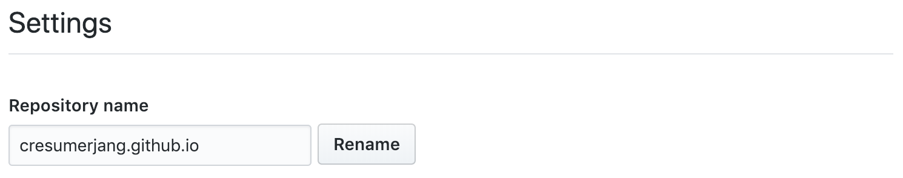
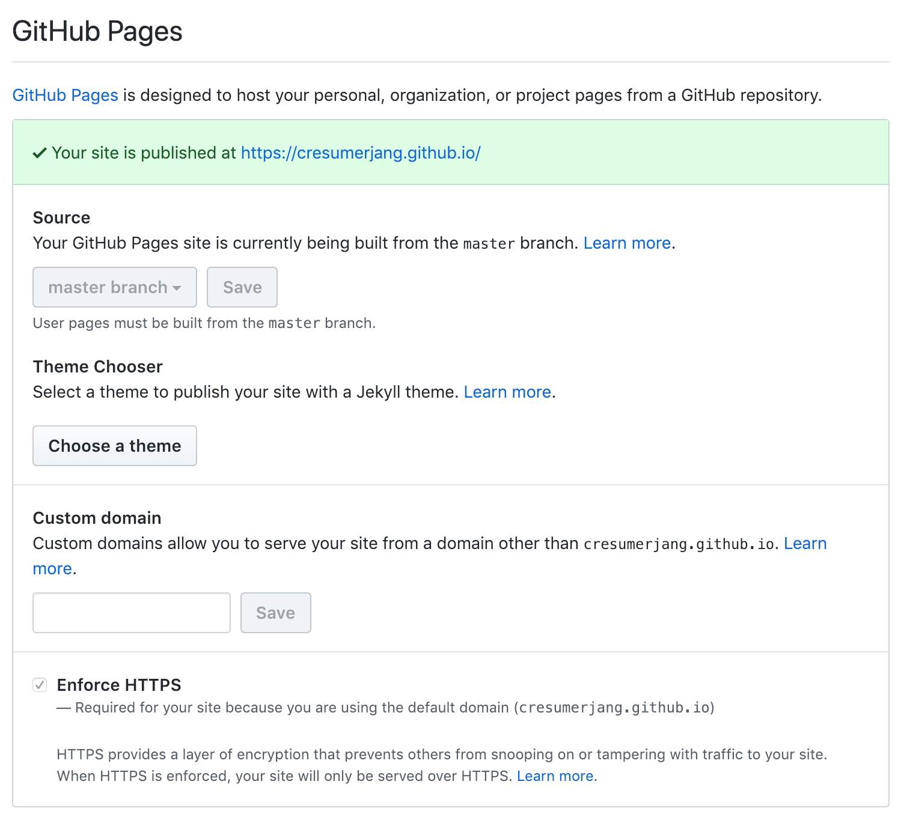

Why Blog
개발자로써 자신이 학습한 내용을 정리하고 공유하기 위한 플랫폼으로 블로그 만한게 없는 것 같습니다.
미래의 나를 위해서도 도움이 되지만 내가 학습하고 이해한 내용이 맞는지 다른 개발자들에게 검증을 받고 의견을 교환할 수 있는 채널이기도 합니다.
4~5년 전부터 유료 호스팅에 wordpress 기반의 블로그를 운영해 왔습니다. 방문자들과 커뮤니케이션도 간간히 있었고 게시판과 광고도 붙이고 나름 저만의 컨텐츠는 쌓아왔습니다. 재미는 있었지만 점점 관리에 소홀해지고 도메인, 호스트 비용만 나가다 보니 불만이 쌓여져 갔습니다.
새해를 맞아 같은 블로그지만 새로운 환경에서 새로운 마음가짐으 블로그를 운영하기 위해 Hexo 라는 프레임워크를 선택하게 되었고 꾸준히 관심을 가지고 운영해볼 생각입니다. 저처럼 블로그를 운영해 보고 싶으신 분들을 위해 Hexo + Gihub Page 로 블로그를 운영하는 방법을 정리해 봤습니다.
다행히 Hexo에서
wordpress migration을 지원하네요 ^^
필요한 포스트들은 옮겨올 수 있도록 해야겠습니다.
보시고 궁금한점 있으시면 언제든지 코멘트 남겨주세요 :)
Hexo ?
Hexo는 Markdonw 문법을 지원하는 블로그 프레임워입니다.
Hexo 장점
- 직접 html 태그를 생성할 필요 없이 잘 정리한 .md 파일을 .html 파일로 변환해준다.
- 명령어 한줄로 Github, Heroku등 다양 서버에 배포가 가능하다.
- Wordpress와 같이 다양한 Theme와 Plugin이 있고 커스텀 할 수 있다.
- 호스팅 비용이 무료다.(Hexo 때문에 무료인건 아니지만 github, heroku 등을 사용하여 블로그를 무료로 서비스할 수 있다.)
- 저장소를 clone 받아 어디서든 포스팅을 작성하고 배포할 수 있다.
- 간편하게 Google Analytics 붙여 사이트를 분석할 수 있다.
- Disqus를 붙여 간편하게 댓글 시스템을 사용할 수 있다.
- 광고도 간편하게 붙일 수 있을 것 같다?
- Document가 잘 정리되어 있으며 한국어도 지원한다.
- git으로 버전 관리가 가능하다.
Setup
- NodeJS 설치
- Git 설치
- Github에 포스트 버전 관리를 위한 저장소 생성
- cresumerjang.github.io-src
- Github에 포스트 배포(호스팅용) 저장소 생성
- 저장소명은 domain으로 쓸 이름(cresumerjang.github.io)으로 합니다.
- 
- 포스트 배포(호스팅용) 저장소 -> settings -> GitHub Pages 옵 활성화 합니다.
- 
- 저장소명은 domain으로 쓸 이름(cresumerjang.github.io)으로 합니다.
위 4가지 작업을 마쳤으면 본격적으로 Hexo를 사용하기 위한 Setup을 합니다.
우선 Hexo를 전역으로 설치합니다.
1 | npm install hexo-cli -g --save |
Hexo를 초기화하기 위해 아래의 명령을 수행합니다.
1 | # hexo init <folder> |
초기화가 완료되면 다음과 같은 폴더 구조를 확인할 수 있습니다.
1 | ├── _config.yml # 프레임워크 환경설정 파일 |
Commands
설정에 앞서 유용하거나 자주 사용하는 Hexo 명령어의 사용법에 대해서 알아보겠습니다
명령어에 대한 자세한 설명은 Hexo Command Documentation에서 확인하실 수 있습니다.
1 | hexo init |
웹 사이트를 초기화합니다. folder가 준비되어 있지 않다면 Hexo는 현재 디렉토리에 웹 사이트를 세팅합니다.
1 | hexo new [layout] <title> |
새 글(article)을 생성합니다. layout이 준비되어 있지 않다면, Hexo는 _config.yml에 정의된 default_layout을 사용합니다. 만약 title에 공백이 포함된다면 따옴표로 감싸주세요.
1 | hexo clean |
캐시 파일 (db.json) 및 생성된 파일들 (public) 을 삭제합니다.
1 | hexo publish [layout] <filename> |
publish 명령어는 draft 레이아웃으로 작성되어 source/_drafts 위치하고 있 초안 포스트를 source/_posts로 옮기는 작업을 합니다.
Hexo 실행 시 --draft 옵션을 추가하거나 _config.yml파일에서 render_drafts를 활성화 하면 draft를 렌더링할 수 있습니다.
1 | hexo generate |
source/_posts 아래 위치한 포스트들로 public/ 아래에 정적 파일들을 생성합니다.
1 | hexo server |
로컬 서버를 구동시킵니다. 기본적으로 http://localhost:4000/ 를 사용합니다.
1 | hexo list <type> |
아래와 같이 경로(route) 목록을 보여줍니다.
1 | hexo list post |
1 | hexo deploy |
_config.yml의 deploy 설정을 참고하여 웹 사이트를 deploy 합니다.
Configuration
Root 디렉토리에 위치한 _config.yml 파일을 사용해 사이트 환경 설정을 수정할 수 있습니다.
각 설정값들에 대한 자세한 설명은 Hexo Configuration Documentation에서 확인하실 수 있으며, 아래는 제가 사용중인 _config.yml 파일 입니다.
크게는 #Site, #Url, #Theme, #Deploy, #Writing(post_asset_folder) 정도 수정하였으며 좀 더 디테일한 설정은 Theme의 _config.yml과 각 Post 레이아웃 파일에서 추가로 설정할 수 있습니다.
1 | # Hexo Configuration |
Write & Generate
포스트를 작성하는 방법을 알아보겠습니다.
직접 마크다운 파일을 만들 필요없이 hexo 명령어를 통해서 선택한 layout 으로 파일을 생성합니다.
레이아웃에 따라서 바로 포스트를 생성할 수 도 있고 초안으로 포스트를 source/_drafts에 생성해 두었다가 publish 명령어를 사용해 source/_posts로 옮긴 후 generate 명령어를 사용해 public/로 내보낼 수 도 있습니다.
1 | hexo new [layout] <title> |
draft 를 사용한 경우 포스트 작성이 완료되면 아래의 publish 명령어를 실행해 줍니다.
1 | hexo publish [layout] <filename> |
publish 명령어는 source/_drafts에 위치하고 있는 초안 포스트를 source/_posts로 옮기는 작업을 합니다.
1 | hexo clean & hexo generate |
public/ 폴더를 지우고 source/_drafts에 위치하고 있는 포스트를 html 파일로 변환해 public/로 내보냅니다.
Layout
기본 layout은 post 이지만 _config.yml 파일의 default_layout 값을 변경하여 기본 layout을 post, page, draft중 하나로 변경할 수 있습니다.
scaffolds/post.md post layout 파일을 예시로 보겠습니다. key : value 형태(YAML)로 구성되어 있으며 이 부분을 Front-matter라고 부릅니다. 특정 속성에 변수를 할당하거나 기본 값을 설정해 둘 수 있습니다.
1 | title: {{ title }} |
Font-matter 환경설정 및 기본 값
| 설정 | 설명 | 기본 값 |
|---|---|---|
| layout | 레이아웃 | |
| title | 타이틀 | |
| date | 발행일 | 파일이 생성된 날짜 |
| updated | 갱신일 | 파일이 업로드된 날짜 |
| comments | 포스트에서 comment 기능을 사용할지 여부 | true |
| tags | 태그 (page에서는 사용 불가능) | |
| categories | 카테고리 (page에서는 사용 불가능) | |
| permalink | 포스트의 기본 permalink를 override합니다. |
아래는 선택한 레이아웃에 따라 파일이 생성되는 위치입니다.
| Layout | Path |
|---|---|
| post | source/_posts |
| page | source |
| draft | source/_drafts |
Filename
기본적으로, Hexo는 post의 제목을 파일명과 동일하게 사용합니다. _config.yml 파일의 new_post_name 설정을 변경하여 기본 파일명을 바꿀 수 있습니다. 예를 들어, :year-:month-:day-:title.md는 포스트가 생성된 날짜를 파일명의 접두사로 사용하게 합니다. 당신은 아래와 같은 placeholder를 사용할 수 있습니다.
| Placeholder | 설명 |
|---|---|
| :title | Post 제목 (소문자, 공백은 ‘-‘하이픈으로 변경됩니다.) |
| :year | 연도를 생성합니다. 예. 2015 |
| :month | 월을 생성합니다. (0이 붙습니다.), 예. 04 |
| :i_month | 월을 생성합니다. (0이 붙지 않습니다.), 예. 4 |
| :day | 일을 생성합니다. (0이 붙습니다.), 예. 07 |
| :i_day | 일을 생성합니다. (0이 붙지 않습니다.), 예. 7 |
Deploy
Github 저장소에 배포를 위해서 hexo-deployer-git을 설치해 주고 메인 _config.yml에 deploy 환경을 설정합니다.
1 | npm install hexo-deployer-git --save |
hexo-deployer-git 설치
1 | # Deployment |
_config.yml 파일에 deploy 환경 설정
1 | hexo |
위 두작업이 완료되면 deploy 명령어로 github 저장소에 배포(실제로는 push 행위)합니다.
해당 저장소의 Github 페이지 주수로 잘 배포되었는지 확인합니다.
https://cresumerjang.github.io/
여기까지 진행하면 Hexo를 사용하여 블로그를 운영할 수 있습니다.
아래는 추가 Topic으로 하나씩 해결해 가면 다뤄볼 예정입니다.
Site Analytics
Google Analytics (미작성)
Advertisement
Google Ad (미작성)